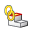
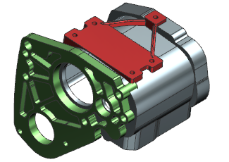

Choose Format→Part Module→Establish Relationship.
In the Select Part Module group, select Frame Mount.
In the Select Linked Part Module group, select case_mount_3 and click OK.
Examine the Part Navigator. Notice that the Outputs collector has two linked faces. The broken linked face and the new one .
The new linked face is on top of the broken linked face. The broken linked face is no longer needed.
Right-click the broken Linked Face and choose Delete. Click OK in the Notification message box.
Notice there are just two strengthening ribs.
